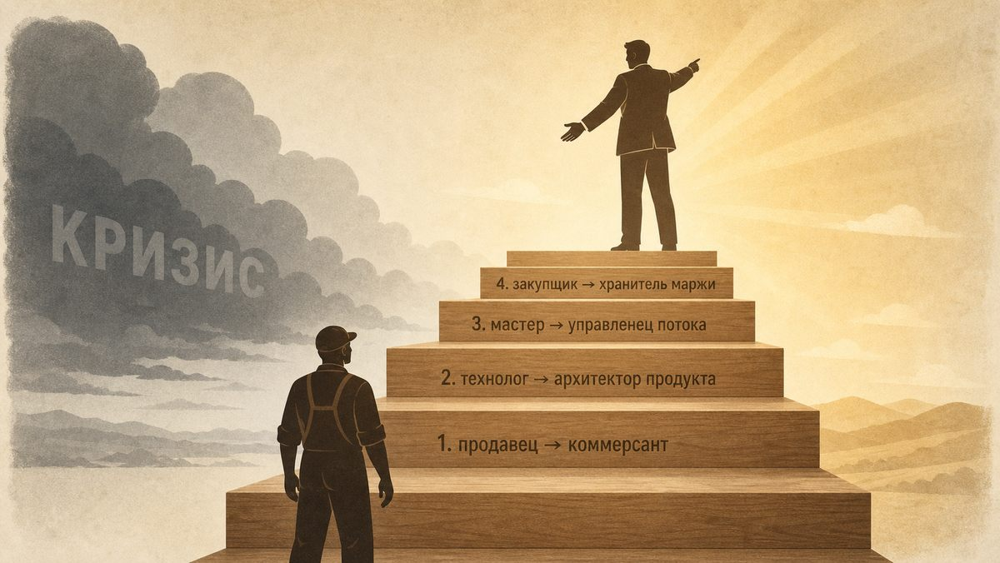
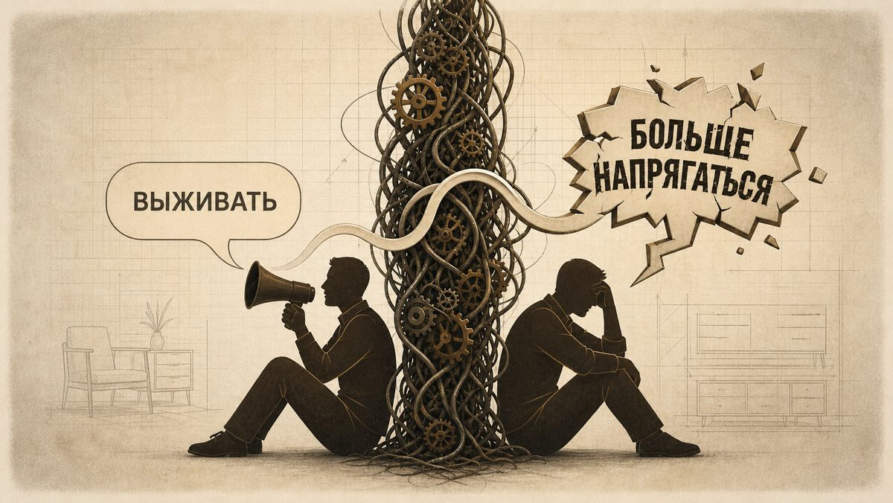
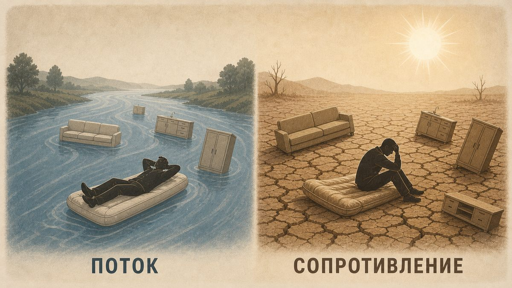
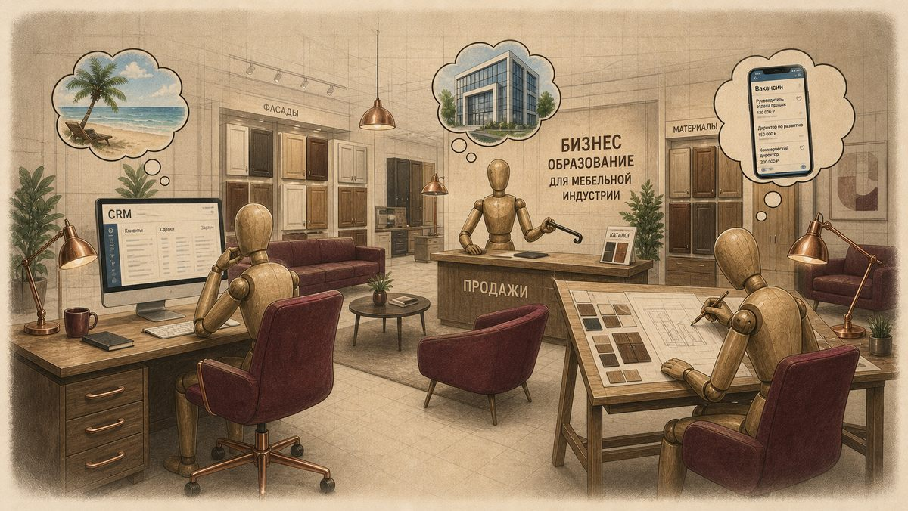
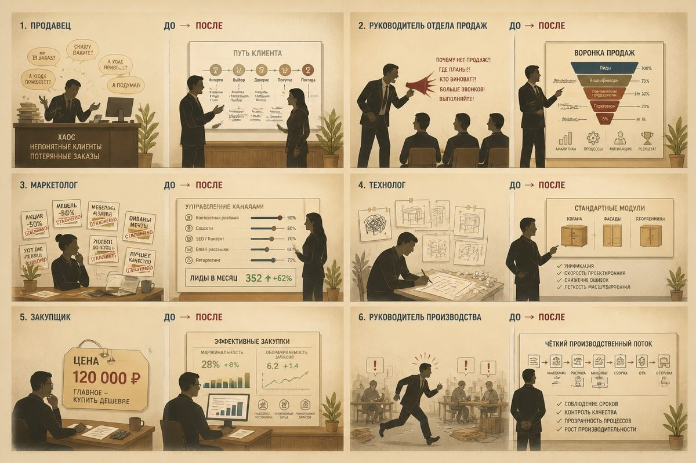
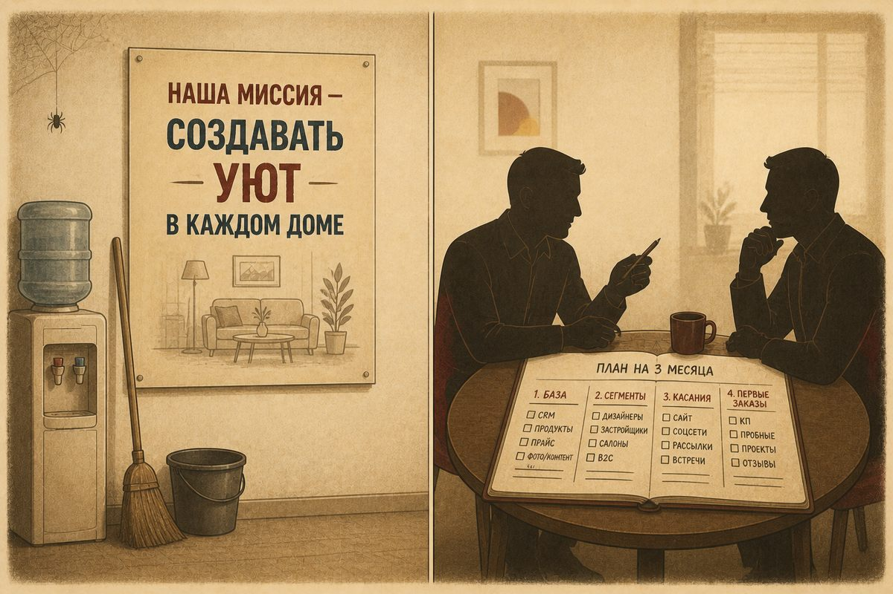
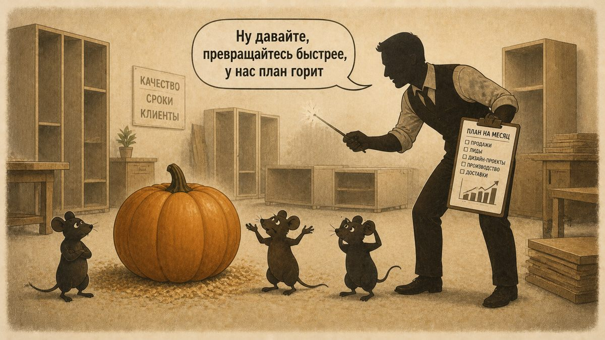

Есть одна управленческая ошибка, которую собственники мебельных компаний сейчас делают особенно часто. Они пытаются объяснить сотрудникам свою цель.
Мол, рынок просел, заказов меньше, реклама подорожала, клиенты стали осторожнее, производство недогружено, склад давит, кассовый разрыв подкрадывается как участковый к шашлыкам в неположенном месте. Поэтому всем надо собраться, стать эффективнее, продавать больше, работать лучше, не косячить, не ныть, не ждать указаний, проявлять инициативу и вообще вести себя так, будто компания — это не место работы, а последняя крепость цивилизации.

Звучит разумно, но есть нюанс: для собственника это цель, а для сотрудника - чужая тревога, аккуратно упакованная в корпоративную речь.
Собственник говорит - сотрудник слышит
Собственник говорит: «Нам нужно выжить». Сотрудник слышит: «Нам нужно, чтобы ты больше напрягался».

Собственник говорит: «Нам нужно увеличить продажи». Сотрудник слышит: «Нам нужно, чтобы ты сильнее доставал клиентов».
Собственник говорит: «Нам нужно навести порядок в CRM». Сотрудник слышит: «Нам нужно, чтобы ты после работы ещё полчаса заполнял поля, которые всё равно никто не смотрит».
Собственник говорит: «Сейчас важный момент, надо всем включиться». Сотрудник слышит: «Сейчас опять будут просить героизма без понятного обмена».
И ведь сотрудник не всегда неправ.
В потоке и в сопротивлении
В растущем рынке эту проблему можно было не замечать. Заказы шли, продавцы продавали, производство производило, замерщики ездили, дизайнеры рисовали, сборщики собирали, бухгалтерия ругалась, собственник периодически говорил: «Надо бы навести порядок», но потом приходили новые деньги, и порядок снова переносился на следующий квартал.

Пока рынок растёт, компанию часто вытаскивает не система, а поток. Поток заявок, поток денег, поток людей, которые покупают кухню, потому что всё равно собирались покупать кухню. Но когда рынок падает, поток исчезает. И тут выясняется неприятное: команда, которая нормально работала в потоке, не обязательно умеет работать в сопротивлении, а кризис - это и есть сопротивление.
В кризис собственнику кажется, что главная проблема заключается в нехватке продаж. На самом деле главная проблема глубже. Компания теряет общий смысл движения. Раньше смысл был простой: обработать входящий спрос, а теперь входящего спроса мало. И если раньше можно было жить в логике «кто быстрее ответил, тот и продал», то теперь нужна другая: кто лучше понял клиента, кто точнее собрал предложение, кто быстрее вернул старую базу, кто вышел в B2B, кто снизил переделки, кто перестал продавать в минус, кто превратил хаос в повторяемость.
А это уже не просто работа, это развитие людей.
Не «помоги мне», а «кем ты можешь стать»
Что должен сказать собственник своим ключевым людям? Обычно он говорит: «Ребята, у нас сложная ситуация, надо спасать бизнес». Это честно. Но плохо работает.
Потому что бизнес - его, риски - его, активы его, долги - таки тоже его, но это уже, как говорится, интимная сторона предпринимательства. А сотрудник всё равно остаётся сотрудником, даже если он лояльный, умный, приличный и не пишет резюме прямо на рабочем компьютере.
Поэтому ему недостаточно показать цель собственника, ему надо показать его собственную цель. Не «помоги мне спасти компанию», а: «Давай посмотрим, кем ты можешь стать за этот кризис».
Это звучит непривычно для мебельного бизнеса. Потому что у нас во многих компаниях до сих пор считается, что сотрудник должен быть благодарен уже за то, что ему дают работу, стол, стул, доступ к 1С и возможность иногда пить чай из кружки с логотипом поставщика фурнитуры. Но рынок изменился. Сильные люди не хотят просто «ходить на работу». Они хотят понимать, что с ними будет через год, два, три. И если компания не может ответить на этот вопрос, она получает не команду, а временную аренду человеческих тел : тела приходят утром, тела нажимают кнопки, тела отвечают клиентам, тела ходят на планёрки, но голова у этих тел уже в другом месте.

Поэтому в кризис надо перестать искать «лояльных сотрудников». Под лояльностью часто понимают что-то подозрительное: чтобы человек не спорил, не задавал неудобных вопросов, терпел бардак, работал сверхурочно, не просил роста и верил в компанию даже тогда, когда компания сама в себя уже верит с трудом. Это не лояльность - это управленческая сказка для взрослых.
Настоящая лояльность возникает не из призывов, а из совпадения интересов: человеку должно быть выгодно расти вместе с компанией, причем не только в деньгах, но в компетенциях, в статусе, в самостоятельности, в рыночной цене, а также в способности через два-три года сказать: «Я здесь стал сильнее».
Старые роли, новые задачи
Простой пример. Продавец в мебельном салоне. Раньше его задача была понятна: встретить, показать образцы, рассказать про материалы, сделать расчёт, позвонить, если клиент ушёл думать, и желательно не забыть, кому звонил. В хорошие годы этого хватало.
Сейчас не хватает. Клиент стал осторожнее, дольше выбирает, сильнее торгуется, боится ошибиться, может уйти на маркетплейс, может заказать у частника, может вообще решить, что старая кухня ещё годик постоит, тем более она уже видела столько семейных драм, что имеет право на пенсию. И если продавец продолжает работать как раньше, он просто ждёт клиента, который уже почти готов купить. А таких клиентов стало меньше.
Что обычно говорит ему собственник? «Поднимай конверсию. Дожимай. Не давай скидку сразу. Веди CRM. Звони по базе. Продавай допы». Всё правильно, но для продавца это набор требований. А надо превратить это в его личную цель. Например: «За год ты можешь стать не просто продавцом мебели, а специалистом по сложным продажам в падающем рынке. Человеком, который умеет продавать не тогда, когда клиент сам пришёл с деньгами, а тогда, когда клиент сомневается, боится, сравнивает и хочет ещё подумать».
Это другая рамка: такой продавец стоит на рынке дороже. Его можно поставить не только в салон, но и в работу с дизайнерами, с корпоративными клиентами, с дорогими проектами. Он становится не человеком у стойки, а коммерческим специалистом.
Возьмём РОПа. Во многих мебельных компаниях РОП - это бывший сильный продавец, которому однажды сказали: «Ты хорошо продаёшь, теперь руководи остальными». После этого у компании стало на одного хорошего продавца меньше и на одного не вполне готового руководителя больше. Классика управленческого народного промысла.
В кризис такой РОП часто превращается в диспетчера тревоги. «Почему не позвонили? Почему не закрыли? Почему в CRM пусто? Почему ты опять дал скидку?» Это не управление продажами. Это акустическое сопровождение провала.
Ему тоже нужна не цель собственника, а своя: «За год сделаем из тебя не старшего продавца, а коммерческого руководителя. Человека, который строит систему продаж: воронку, контроль касаний, работу с отказами, повторную базу, B2B, аналитику по каналам, обучение продавцов». Людей, которые умеют кричать «где продажи», много. Людей, которые умеют построить управляемую систему продаж, мало. Разница примерно как между человеком, который смотрит на градусник, и врачом. Первый тоже видит температуру, но лечить от этого не начинает.

И так по всем ключевым ролям.
Маркетолог. В кризис он становится самым удобным виноватым: продаж нет, значит, лидов мало, реклама плохая, маркетолог не тот. А если ему просто сказать «нам нужны лиды дешевле», это не цель, это давление. Цель другая: стать не человеком, который запускает рекламу, а владельцем канала продаж. Авито. Дизайнеры. Повторная база. B2B. Маркетплейсы. Человеком, который понимает экономику канала: сколько стоит заявка, сколько доходит до замера, сколько становится заказом, какая маржа, какие товары тянут деньги, а какие просто украшают презентацию.
Технолог или конструктор. Часто с ним обходятся как с внутренним сервисом: посчитай, перечерти, переделай, клиент хочет вот так, менеджер уже пообещал, производство говорит, что так нельзя, ну придумай что-нибудь. Технолог становится переводчиком с языка коммерческих фантазий на язык производственной реальности. Иногда с элементами психотерапии. А в кризис именно он может стать одним из главных людей в компании. Потому что кризис требует не просто продавать мебель, а делать мебель, которую компания может производить быстро, прибыльно и без переделок. Типизация. Библиотека решений. Стандарты узлов. Матрица замен материалов. И тогда технолог перестаёт быть «человеком, который чертит». Он становится архитектором продукта, то есть тем , кто делает так, чтобы невозможное перестали обещать.
Закупщик. Раньше от него ждали простого: найди дешевле, но дешевле - не всегда выгодно. Можно купить дешевле и получить срыв сроков, а можно купить дешевле и заморозить деньги в материале, который потом будет лежать как памятник оптимизму. Поэтому его цель - это стать хранителем маржи и оборачиваемости, а складу перестать быть музеем управленческих решений с экспозицией «Мы надеялись, что это будет продаваться».
Начальник производства. Когда заказов много, его ругают за сроки. Когда мало, пугает недогруженностью. Цель: стать управленцем потока. Человеком, который умеет работать при неровной загрузке: планировать короткие серии, снижать переналадки, видеть узкие места, согласовывать приоритеты с продажами и не превращать каждый заказ в отдельную спецоперацию. Потому что рынок не обещает нам ровный спрос. Скорее наоборот.
Логика везде одна: старая роль - исполнитель функции, новая - владелец участка с собственной экономикой.
Как этот разговор провести
Теперь главный вопрос: как собственнику всё это внедрить?
Не мотивационной речью. Не стратегической сессией, где все клеят стикеры, фотографируются у флипчарта, а через неделю возвращаются к старому бардаку. Не приказом «с понедельника у всех личные цели».
С каждым ключевым человеком нужно провести отдельный разговор. Не о том, что он должен компании, а о том, кем он хочет стать. Вопросы простые:
— Кем ты хочешь быть через два-три года? Какая профессиональная способность у тебя должна появиться? За что тебе должны платить больше? Какой проект в компании может стать твоей площадкой? Что ты не хочешь делать больше? Где ты сейчас слабый, чему готов учиться? Как поймём через три месяца, что ты реально движешься?
Это не душевная беседа в стиле «расскажи о мечтах». Это управленческая диагностика. Потому что если человек на всё это отвечает: «Ну, я хочу спокойно работать и нормально зарабатывать», — то это не цель. Это базовое желание: нормальное, человеческое, понятное, но не цель. С таким человеком тоже можно работать, но просто не надо делать вид, что он ключевой участник изменений.
Кризис очень быстро отделяет людей с траекторией от людей без траектории. Люди без траектории ждут, когда всё вернётся как было. Люди с траекторией спрашивают: чему сейчас можно научиться, какой участок взять, где слабое место, какой новый канал проверить, какую систему навести, где можно стать сильнее, пока остальные жалуются. Вот на таких людях можно строить компанию. Не потому что они хорошие, а потому что у них есть собственное движение.
Но сначала поговорим про цель самого собственника
Тут есть неприятный момент и для собственника: чтобы показывать людям их цель, надо сначала иметь свою.
Не в стиле «хочу, чтобы компания росла» - это желание , не в стиле «хочу миллиард выручки» — это цифра, которая выглядит солидно в презентации и вызывает уважение у тех, кто не видел отчёт о движении денежных средств, но все это "хотелки". Настоящая цель отвечает на вопрос: какую компанию мы строим?
Например: «Мебельную компанию, которая умеет быстро делать качественные типовые решения для семей с детьми». Или: «Сильного регионального игрока в корпусной мебели с понятным сервисом и коротким сроком». Или: «Фабрику, которая специализируется на B2B-проектах для офисов, HoReCa и общественных пространств». Или: «Производственную компанию, которая зарабатывает не шириной ассортимента, а повторяемостью, скоростью и контролем маржи».
Вот это уже цель, и с ней можно работать.
Если у собственника такой цели нет, он не сможет дать цель другим. Он сможет только раздавать задачи: сегодня Авито, завтра маркетплейсы, послезавтра дизайнеры, через неделю B2B, потом CRM, затем пересчитать мотивацию, после снять Reels, потом отменить акцию, потому что она съела маржу. Компания начинает метаться, сотрудники устают, собственник злится, а рынок, как назло, не аплодирует, ни сидя, ни стоя.
Поэтому личные цели сотрудников должны быть привязаны к проектам компании. Не «развивайся», а конкретно: ты отвечаешь за повторные продажи по старой базе, ты - за направление дизайнеров, ты - за типовую линейку шкафов, ты - за Авито как канал продаж, ты - за контроль маржи в заказах, ты - за прозрачную загрузку производства, ты - за B2B-воронку. Это и есть маленькие княжества: человеку нужен участок, где он может стать сильнее и показать результат, не вся компания сразу и не «будь инициативным», а конкретный кусок реальности, за который можно отвечать.
При этом надо быть честным: далеко не каждый сотрудник хочет расти, совсем не каждый может, более того - не каждому это нужно. И это нормально. В компании нужны разные люди: есть люди развития, есть люди стабильного исполнения, есть люди, которые хорошо работают в понятной системе, но не будут эту систему создавать.
Ошибка собственника - требовать предпринимательского поведения от всех. Это как требовать от каждого стула быть трансформером. Иногда стул должен просто быть нормальным стулом и не падать под клиентом.
Ключевой вопрос не в том, чтобы всех вдохновить, а в том, чтобы правильно распределить людей: кому-то - проект, кому-то - ясный регламент, а кому-то - новую роль, ну а с кем-то — расстаться, с кем-то - перестать ждать невозможного. Особенно последнее! Много управленческой боли возникает не от плохих людей, а от неправильных ожиданий. Собственник ждёт, что продавец станет коммерческим директором, а продавец хочет спокойно продавать и уходить домой в 18:00. Оба нормальные, но вместе им лучше не играть пьесу «Ты меня разочаровал».
И ещё. Личная цель сотрудника не должна противоречить экономике компании. Если человек хочет развиваться в направлении, которое компании не нужно, это не стратегия, а кружок по интересам. Маркетолог хочет развивать красивый бренд, а компании сейчас срочно нужно наладить канал заявок из Авито и повторной базы. Продавец хочет заниматься только дорогими проектами, а компания зарабатывает на типовых быстрых решениях. Технолог хочет делать сложные индивидуальные конструкции, а компании нужно снизить вариативность.
Здесь и нужна работа собственника. Не просто слушать желания людей, а
искать пересечение: что нужно компании, что интересно человеку, где есть рынок, какой результат можно измерить, чему человек реально готов учиться. На пересечении этих пяти вещей и появляется настоящая цель.
Управленческий контракт без плакатов
Самая слабая управленческая фраза в кризис: «Надо больше стараться». Потому что люди и так стараются, но просто (или не просто) стараются в старой модели. Продавец старается дожать клиента скидкой, маркетолог - сделать больше объявлений, мастер на производстве - быстрее выполнять странные заказы, закупщик - купить дешевле, а собственник - контролировать всё лично. Все стараются! А компания не становится сильнее, потому что старание без новой системы - это бег на месте с повышенным расходом нервной ткани.
Сильная фраза другая: «Давай определим, какую новую способность ты должен получить, чтобы компания и ты вместе прошли этот кризис сильнее». Это не про доброту, и не про модный HR, это жёсткая бизнес-логика. Если человек не получает новую способность, компания тоже её не получает.
В кризис собственнику кажется, что ему нужны деньги. Таки да! Это правда, но не вся правда: ему нужны люди, которые умеют эти деньги создавать в новой реальности. А такие люди не появляются от приказа. Они появляются, когда у них есть понятный участок ответственности, личная цель, обучение под задачу, право на решения, измеримый результат, честный разговор о росте и связь между их развитием и развитием компании. Это и есть управленческий контракт, не юридический, а смысловой.
И ему не обязательно быть красиво оформленным. Никаких плакатов «Наша миссия - создавать уют в каждом доме». Обычно такие миссии висят на стене рядом с кулером и вызывают меньше эмоций, чем график уборки туалета. Нужна нормальная взрослая договорённость. Например:
«У нас падает входящий спрос. Запускаем направление повторных продаж. Берёшь на себя. За три месяца - понятная база, сегменты, сценарии касаний и первые заказы. Я даю доступ к данным, время, помощь маркетолога и еженедельную встречу. Если получится, становишься руководителем этого направления».
Вот это и есть цель, так .она понятна и она выгодна компании, а также она выгодна человеку, и её можно проверить.

Но есть один риск. Собственник должен быть готов помогать человеку достигать его цели. А не просто красиво её сформулировать и уйти в закат. Если дали проект, но не дали полномочий, это не развитие - это ловушка. Если дали ответственность, но не дали данные, это не управление - это гадание. Если поставили цель, но каждый день перебивают срочными поручениями, это не фокус - это имитация. Если обещали рост, но потом сказали «сейчас не время», человек запомнит (припомнит) и будет прав.
Альтернатива - собственник, который один тащит компанию на себе, злится на сотрудников, жалуется на рынок, ночами смотрит платёжный календарь и постепенно превращается в человека, который знает все проблемы бизнеса, но уже не верит, что кто-то кроме него способен их решать. Точнее, тащить одному можно, но недолго и с последствиями для характера.
Прежний рынок может не вернуться
Задача кризиса - не просто переждать, слово «переждать» вообще опасное. Оно звучит так, будто где-то за углом уже стоит прежний рынок, просто немного задержался. Но прежний рынок может не вернуться, вернуться может другой: с более осторожным клиентом, с более жёсткой конкуренцией, с более дорогими деньгами, с более сильными маркетплейсами, с меньшей терпимостью к ошибкам.
И к этому рынку нельзя подготовиться командой, которая просто ждёт, когда всё станет как раньше.
Поэтому в кризис надо не только сокращать расходы и искать продажи. Надо выращивать людей под новый рынок: не всех - только ключевых. Тех, у кого есть энергия, ум, характер и желание стать сильнее, и с ними нужно говорить не только о плане на месяц, а о траектории на годы. Потому что сильные люди остаются не там, где им обещают спокойствие, ведь они остаются там, где видят рост.
Вот главный управленческий разворот.
Плохо: «У нас кризис, помогите мне спасти бизнес». Лучше: «У нас кризис. Давайте посмотрим, кто из вас может вырасти быстрее, чем рынок падает».
Плохо: «Надо работать больше». Лучше: «Надо научиться работать иначе».
Плохо: «Все должны быть лояльными». Лучше: «У каждого ключевого человека должна быть собственная причина играть в эту игру».
Плохо: «Я поставил цели компании». Лучше: «Я связал цели компании с личными целями людей».
Объединяет не боль, а понятный шанс
В кризис мебельщикам не надо рассказывать сотрудникам только про боль бизнеса. Боль и так все чувствуют: падает трафик, клиенты торгуются, заказы идут тяжелее, деньги считаются жёстче, а ошибки стали дороже. Но боль сама по себе не объединяет, иногда она просто делает людей раздражёнными. Объединяет не боль - объединяет понятный шанс!
Поэтому своим людям надо показывать не свою цель, а их цель. Не «мне нужно, чтобы ты продавал больше», а «ты можешь стать продавцом, который умеет продавать в сложном рынке». Не «мне нужно, чтобы ты контролировал менеджеров», а «ты можешь стать руководителем продаж, который строит систему». Не «мне нужно, чтобы ты быстрее чертил», а «ты можешь стать архитектором продуктовой системы». Не «мне нужно, чтобы цех не простаивал», а «ты можешь стать управленцем потока в неровном спросе».
Это не мягкость. Это точность.
Потому что взрослые люди редко долго работают за чужую мечту. Особенно если мечта выглядит как «закрыть кассовый разрыв». Но они могут работать за свою траекторию, и если компания становится местом, где человек растёт, учится, получает статус, видит результат и понимает, что через год будет стоить дороже как профессионал, тогда у него появляется причина включаться. Не из жалости к собственнику, не из страха и не из корпоративного гипноза, а потому что ему самому это нужно.
Главный вопрос для собственника мебельной компании сейчас не только «как нам поднять продажи?» И даже не только «как нам пережить кризис?» Главный вопрос глубже: кем должны стать мои ключевые люди, чтобы компания могла жить в новом рынке? И второй вопрос, ещё неприятнее: а кем должен стать я сам?
Потому что если собственник остался прежним, а от сотрудников ждёт превращения, это не развитие - это мебельная версия сказки про Золушку, где тыква должна стать каретой, мыши — лошадьми, а сам собственник продолжает стоять рядом и командовать: «Ну давайте, превращайтесь быстрее, у нас план горит».

Так не работает, но работает иначе.
(1) Сначала собственник формулирует достойную цель компании.
(2) Потом находит личные цели ключевых людей.
(3) Потом связывает одно с другим через конкретные проекты.
(4) Потом помогает людям расти.
И только тогда появляется команда, не штат и не список фамилий в зарплатной ведомости, не группа людей, которые «у нас давно работают», а команда - люди, которым есть зачем становиться сильнее именно здесь.
В кризис это, возможно, один из самых ценных активов мебельной компании. Потому что станки можно купить, сайт можно переделать и рекламу можно запустит, CRM можно внедрить и ассортимент можно пересобрать, а вот людей, которые хотят и могут расти вместе с бизнесом, быстро не купишь. Их можно только найти, разглядеть и правильно включить.
Если, конечно, собственник сам понимает, куда он идёт. А если не понимает, тогда лучше начать именно с этого, потому что показывать людям их цель может только тот, кто хотя бы примерно разобрался со своей.